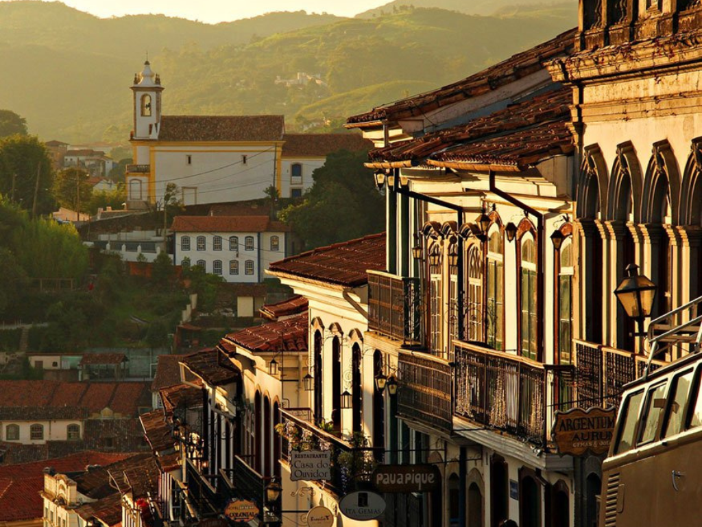

Localizado no coração da região Sudeste, Minas Gerais é o quarto maior estado brasileiro em extensão territorial e o segundo mais populoso, destacando-se como um pilar fundamental da história, economia e cultura do Brasil. Com sua capital em Belo Horizonte, o estado é reconhecido pela rica herança colonial, evidenciada em cidades históricas como Ouro Preto e Mariana, além de possuir uma das culinárias mais típicas e apreciadas do país. Geograficamente, Minas abriga uma grande diversidade de paisagens, caracterizada por serras, montanhas — como a Mantiqueira e o Espinhaço — e o Cerrado, sendo também um gigante na mineração, agropecuária, produção de café e um crescente polo industrial e de tecnologia.
